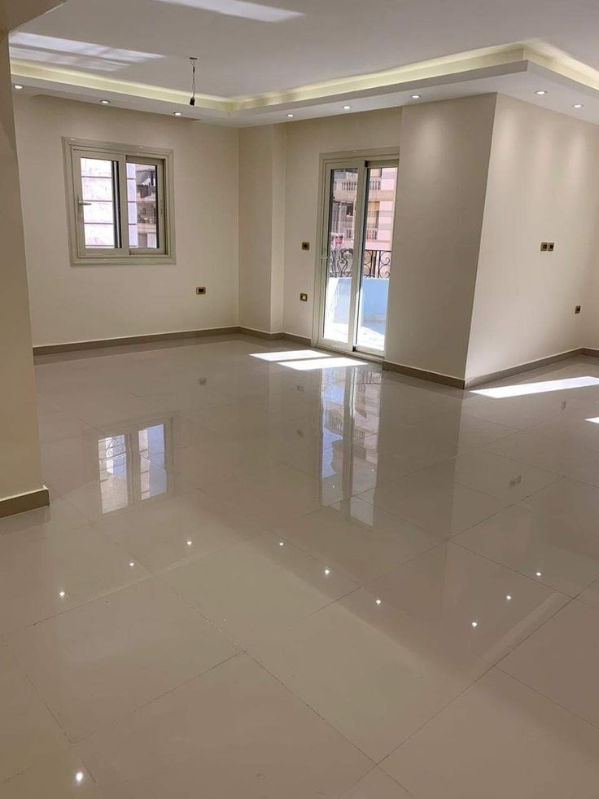

تتعرض واجهات المنازل والفلل والمباني التجارية بعد أعمال البناء والتشطيب إلى تراكم بقايا الدهانات والبويات على أسطح الزجاج والأرضيات والحوائط الخارجية، وتحتاج إزالة هذه البقايا إلى دقة عالية حتى لا تترك أي أثر أو خدش على الأسطح المختلفة. ولهذا يبحث الكثير من أصحاب العقارات في الرياض عن شركة تنظيف بواقي الدهان والبويات تمتلك الخبرة الكافية والمعدات المتخصصة لهذا النوع من الأعمال الدقيقة.
ومع اتساع رقعة المشاريع السكنية والتجارية في الرياض، أصبحت الحاجة إلى شركة تنظيف واجهات ذات خبرة عالية في إزالة بقايا الدهان أمراً ضرورياً، خاصة أن هذه المهمة تحتاج إلى معرفة دقيقة بأنواع الدهانات المختلفة وطريقة إزالة كل نوع دون الإضرار بالسطح الأساسي.
ومن هذا المنطلق تقدم شركة حلول وتميز للتنظيف بالرياض خدمة متخصصة في إزالة بقايا الدهانات والبويات عن الواجهات والأرضيات، باستخدام أدوات ومحاليل آمنة تحافظ على مظهر الأسطح دون أي أضرار جانبية، وذلك ضمن نطاق أعمال شركة تنظيف واجهات متكاملة تغطي جميع جوانب صيانة المبنى.
وتُعد شركة حلول وتميز للتنظيف من الشركات الرائدة التي تقدم حلولاً شاملة لإزالة بقايا الدهان عن جميع أنواع الأسطح، سواء كانت واجهات زجاجية أو أرضيات رخام وسيراميك أو حوائط خارجية في مختلف أحياء الرياض.

فريق حلول وتميز أثناء تجهيز موقع لإزالة بقايا الدهان بعد أعمال التشطيب بالرياض
ما هي خدمة إزالة بقايا الدهانات والبويات؟
يُقصد بهذه الخدمة إزالة جميع بقع وبقايا الدهانات والبويات التي تتساقط على الأسطح المختلفة أثناء أعمال الطلاء والتشطيب، مثل الأرضيات والزجاج والحوائط، وذلك دون التأثير على جودة السطح الأساسي أو تركه بأي أثر واضح.
وتحتاج هذه العملية إلى خبرة دقيقة، لأن استخدام أدوات حادة أو مواد كيميائية غير مناسبة قد يتسبب في تلف السطح بشكل نهائي. ولهذا يفضل الكثير من العملاء التعامل مع شركة تنظيف واجهات متخصصة تدرك الفرق بين أنواع الدهانات وطريقة إزالة كل نوع منها بأمان.
وتشمل خدمات شركة تنظيف بواقي الدهان والبويات التي تقدمها حلول وتميز:
- إزالة بقع الدهان عن الأرضيات الرخامية والسيراميك
- إزالة رشاش البويات من الزجاج والألوميتال
- إزالة بقايا الدهان عن الحوائط الخارجية والواجهات
- استعادة نظافة الأسطح ولمعانها الطبيعي
- الحفاظ على السطح الأساسي دون خدوش أو تلف
ولهذا يعتمد عدد كبير من العملاء في الرياض على شركة حلول وتميز للتنظيف للحصول على نتائج نظيفة واحترافية في هذا النوع من الأعمال الدقيقة.
لماذا تحتاج الواجهات لإزالة بقايا الدهان بشكل متخصص؟
يظن بعض الأشخاص أن إزالة بقايا الدهان مهمة بسيطة يمكن تنفيذها بأدوات منزلية عادية، إلا أن الحقيقة أن هذه المهمة تحتاج إلى خبرة ومعدات متخصصة، وهنا يظهر الفرق الحقيقي بين التنظيف العشوائي والاستعانة بـ شركة تنظيف بواقي الدهان والبويات محترفة.
تصلب الدهان مع مرور الوقت
تزداد صلابة بقايا الدهان والبويات كلما طالت فترة بقائها على السطح تحت أشعة الشمس، مما يجعل إزالتها بالطرق التقليدية أمراً صعباً وقد يترك آثاراً واضحة على السطح.
خطر الخدوش الدائمة
استخدام شفرات أو أدوات حادة بطريقة غير صحيحة قد يترك خدوشاً دائمة على سطح الزجاج أو الرخام لا يمكن إصلاحها، ولهذا يعتمد فريق حلول وتميز على أدوات مخصصة ومحاليل آمنة.
اختلاف أنواع الدهانات والبويات
يختلف دهان الزيت عن الدهان المائي واللاكيه، ولكل نوع طريقة إزالة مختلفة يعرفها فريق شركة تنظيف بواقي الدهان والبويات المتخصص جيداً.
حساسية الواجهات والأرضيات الكبيرة
في حالة الفلل والمباني التجارية الكبيرة تحتاج عمليات إزالة بقايا الدهان إلى فريق عمل متعدد ووقت كافٍ، وهو ما توفره شركة تنظيف واجهات ذات الخبرة الطويلة في هذا المجال.

نتيجة نهائية لأرضية رخام لامعة بعد إزالة بقايا الدهان والبويات بالكامل
الوصول الآمن للأسطح المرتفعة
في حالة الأبراج والمباني ذات الواجهات المرتفعة، تستعين شركة تنظيف واجهات بمعدات رفع أو تقنية الكرابل للوصول إلى جميع نقاط الواجهة بأمان تام أثناء إزالة بقايا الدهان.
خطوات إزالة بقايا الدهان والبويات باحترافية
تعتمد شركة حلول وتميز للتنظيف على منهجية واضحة ومدروسة عند تنفيذ أعمال إزالة بقايا الدهان والبويات، بحيث يتم ضمان أفضل نتيجة دون أي ضرر على السطح. وتشمل الخطوات الأساسية التي يتبعها فريق شركة تنظيف بواقي الدهان والبويات:
- معاينة نوع الدهان أو البويه المطلوب إزالتها وتحديد المادة المناسبة للتعامل معها
- تبليل السطح بمحلول مخصص يساعد على تليين بقايا الدهان المتصلبة
- استخدام أدوات كاشطة خاصة بزوايا آمنة لإزالة الطبقة دون خدش السطح
- معالجة البقع المتبقية بمواد تنظيف احترافية لإزالة أي أثر خفيف
- تلميع السطح بالكامل لاستعادة اللمعان الطبيعي
- فحص نهائي للواجهة أو الأرضية للتأكد من خلوها التام من أي بقايا دهان
وبهذه الخطوات المدروسة تضمن شركة حلول وتميز للتنظيف تسليم أسطح نظيفة تماماً وخالية من أي آثار أو خدوش، وهو ما يميزها كـ شركة تنظيف بواقي الدهان والبويات ذات سمعة موثوقة في سوق الرياض.
💡 ملاحظة مهمة: لا يُنصح باستخدام أدوات حادة أو مواد كيميائية قوية غير مخصصة لإزالة بقايا الدهان، لأن ذلك قد يتسبب في خدوش دائمة أو تغير في مظهر السطح. ويفضل دائماً الاستعانة بـ شركة تنظيف واجهات متخصصة مثل شركة حلول وتميز للتنظيف.
إزالة بقايا الدهان من واجهات المنازل والفلل
تحتاج المنازل والفلل الجديدة عادة إلى إزالة بقايا الدهان والبويات التي تتساقط على النوافذ والأبواب الزجاجية والأرضيات أثناء أعمال التشطيب والتسليم. وتوفر شركة حلول وتميز للتنظيف خدمة متكاملة لهذا النوع من الأعمال تشمل:
- إزالة بقع الدهان من نوافذ الفلل والمنازل
- إزالة رشاش البويات من الأرضيات الرخامية والسيراميك
- إزالة بقايا الدهان الناتجة عن أعمال التشطيب الداخلية
- تلميع الأسطح بعد الإزالة لإظهار المظهر الكامل
ويحرص فريق شركة حلول وتميز للتنظيف على التعامل مع كل تفصيلة بدقة حتى تظهر واجهات وأرضيات المنزل بمظهر نظيف تماماً كما لو كانت جديدة، مع الحفاظ الكامل على سلامة الأسطح المختلفة.
شركة تنظيف واجهات الشركات والمحلات من بقايا الدهان
تعتبر المباني التجارية والمحلات من أكثر الأماكن التي تحتاج إلى شركة تنظيف واجهات تمتلك خبرة في التعامل مع الأسطح الكبيرة بعد أعمال التشطيب أو إعادة الطلاء. وتشمل خدمات إزالة بقايا الدهان للمنشآت التجارية:
- إزالة رشاش الدهان عن واجهات المحلات الجديدة
- إزالة بقايا البويات من أرضيات المكاتب والمعارض
- إزالة بقع الدهان عن اللوحات الإعلانية والواجهات الزجاجية
- تنظيف وتلميع الأسطح الخارجية للمباني التجارية والمولات
وتستخدم شركة تنظيف واجهات معدات ومحاليل متخصصة تتيح إزالة بقايا الدهان بسرعة وكفاءة دون التأثير على النشاط اليومي للمحلات والمكاتب، مع الالتزام الكامل بمعايير السلامة أثناء التنفيذ.
كما تحرص حلول وتميز على تنسيق مواعيد التنفيذ بما يتناسب مع أوقات عمل الشركات والمحلات التجارية، لتقليل أي تأثير على النشاط اليومي للعملاء.
أدوات ومعدات شركة تنظيف بواقي الدهان والبويات المتخصصة
يعتمد نجاح عملية إزالة بقايا الدهان والبويات بشكل كبير على جودة الأدوات المستخدمة. ولهذا تعتمد شركة حلول وتميز للتنظيف على مجموعة من الأدوات والمعدات المتخصصة التي تضمن نتائج احترافية دون أي ضرر على السطح.
سكينة الكشط المتخصصة
أداة ذات شفرة رفيعة بزاوية مدروسة تسمح بكشط بقايا الدهان دون خدش السطح.
محاليل إذابة الدهان
مواد مخصصة تساعد على تليين الدهان والبويات المتصلبة دون التأثير على السطح الأساسي.
أدوات التلميع الاحترافية
تستخدم بعد الإزالة لاستعادة اللمعان الطبيعي وإزالة أي أثر خفيف متبقٍ.
معدات حماية الأسطح المحيطة
تشمل أغطية وأشرطة حماية تحمي الأسطح المجاورة أثناء عملية الإزالة والتنظيف.
وبفضل هذه الأدوات المتخصصة، تمكنت شركة حلول وتميز للتنظيف من ترسيخ اسمها بين عملائها كـ شركة تنظيف بواقي الدهان والبويات يمكن الوثوق بها في تنفيذ الأعمال الدقيقة والحساسة على مختلف أنواع الأسطح.
أنواع الدهانات والبويات التي تتعامل معها شركة حلول وتميز للتنظيف
تختلف طبيعة الدهان والبويات من مشروع لآخر، ولهذا توفر شركة حلول وتميز للتنظيف حلولاً تناسب جميع الحالات، ومنها:
- دهانات الزيت المستخدمة في الأبواب والنوافذ الخشبية والمعدنية
- الدهانات المائية المستخدمة في حوائط الغرف والواجهات الداخلية
- بويات اللاكيه المستخدمة في تشطيبات الأثاث والديكورات
- رشاش الدهان المتساقط على الأرضيات والزجاج أثناء التنفيذ
- بقع الدهانات القديمة المتراكمة من أعمال ترميم سابقة
ومهما كان نوع الدهان أو البويه، يمتلك فريق شركة تنظيف واجهات المعرفة الكافية بالمادة المناسبة لإزالته دون التأثير على جودة السطح أو مظهره النهائي.
مقارنة بين الإزالة الاحترافية والطرق التقليدية
| المعيار | خدمة إزالة متخصصة | الطرق التقليدية |
|---|---|---|
| خطر الخدوش | منعدم تقريباً بفضل الأدوات المخصصة | مرتفع مع الأدوات الحادة العادية |
| الوقت المستغرق | أسرع بفضل الخبرة والمعدات | وقت أطول ونتيجة غير مضمونة |
| جودة النتيجة النهائية | لمعان ونظافة كاملة | قد تترك آثاراً باهتة أو خدوش |
| حماية الأسطح المجاورة | أغطية ووسائل حماية معتمدة | غير متوفرة غالباً |
ومن خلال هذه المقارنة يتضح الفرق الكبير بين الاعتماد على شركة حلول وتميز للتنظيف المتخصصة والاعتماد على وسائل تنظيف منزلية عشوائية قد تضر بالسطح بدلاً من تحسين مظهره.
عوامل تحديد تكلفة إزالة بقايا الدهان والبويات
تختلف تكلفة خدمة شركة تنظيف بواقي الدهان والبويات من مشروع لآخر بناءً على عدة عوامل، ولهذا تحرص شركة حلول وتميز للتنظيف على معاينة الموقع قبل تحديد السعر النهائي بدقة.
- مساحة السطح المطلوب تنظيفه من بقايا الدهان
- نوع الدهان أو البويه ومدى صلابته وتصلبه مع الزمن
- نوع السطح الأساسي (زجاج، رخام، سيراميك، ألوميتال)
- عدد الطبقات المتراكمة من الدهان أو البويه
- الموقع الجغرافي داخل الرياض ومدى سهولة الوصول إليه
وتوفر شركة تنظيف بواقي الدهان والبويات عروض أسعار واضحة بعد المعاينة المباشرة، مع الحرص على الشفافية الكاملة مع العميل قبل بدء التنفيذ، دون أي رسوم إضافية غير متوقعة بعد الاتفاق المبدئي على السعر.
مناطق تغطية خدمة إزالة بقايا الدهان بالرياض
تقدم شركة تنظيف واجهات خدماتها في جميع أحياء ومناطق العاصمة، حيث يغطي فريق حلول وتميز مناطق واسعة تشمل:
ويتيح هذا الانتشار الواسع لـ شركة حلول وتميز للتنظيف الاستجابة السريعة لطلبات العملاء في أي منطقة بالرياض، سواء كانت المشاريع سكنية صغيرة أو واجهات تجارية كبيرة تحتاج إلى فرق عمل متعددة.
لماذا يثق عملاء الرياض في فريق العمل؟
على مدار سنوات من العمل في مجال تنظيف وصيانة الأسطح المختلفة، اكتسب فريق شركة تنظيف بواقي الدهان والبويات خبرة عملية واسعة في التعامل مع مختلف أنواع المشكلات التي تواجه أصحاب المنازل والمنشآت التجارية بعد أعمال التشطيب.
ويحرص الفريق على الالتزام بالمواعيد المتفق عليها مع العملاء، والوصول في الوقت المحدد بالمعدات والأدوات الكاملة اللازمة لإنجاز المهمة دون الحاجة إلى تأجيل أو تكرار الزيارة. كما يتم تدريب أعضاء الفريق باستمرار على أحدث الأساليب والمواد الآمنة للتعامل مع مختلف أنواع الأسطح.
ومن أبرز ما يميز تجربة العملاء أيضاً هو الشفافية الكاملة في تحديد السعر منذ البداية، دون أي رسوم مخفية أو مفاجآت بعد انتهاء العمل. فبعد المعاينة المبدئية يتم الاتفاق على السعر النهائي بوضوح تام، ولا يتغير هذا السعر إلا في حال اكتشاف حالة إضافية لم تكن ظاهرة أثناء المعاينة الأولى، ويتم إبلاغ العميل بذلك فوراً قبل المتابعة.
بالإضافة إلى ذلك، يوفر فريق شركة تنظيف واجهات خدمة ما بعد التنفيذ للرد على أي استفسارات أو ملاحظات قد تظهر خلال الأيام الأولى بعد الانتهاء من العمل، وذلك حرصاً على رضا العميل الكامل عن النتيجة النهائية.
معايير اختيار شركة تنظيف واجهات موثوقة لإزالة بقايا الدهان
قبل التعاقد مع أي جهة لتنفيذ أعمال إزالة بقايا الدهان، من المهم التأكد من عدة معايير أساسية تضمن جودة التنفيذ وسلامة الأسطح. وتحرص شركة تنظيف واجهات موثوقة مثل حلول وتميز على توضيح هذه المعايير لعملائها قبل بدء أي مشروع:
- خبرة موثقة في التعامل مع مختلف أنواع الدهانات والبويات
- معدات ومحاليل حديثة تناسب كل نوع من الأسطح
- سجل تجاري رسمي وشفافية كاملة في التعاقد والأسعار
- ضمان واضح على جودة التنفيذ والنتيجة النهائية
ويساعد الاطلاع على هذه المعايير أصحاب المنازل والمشاريع التجارية في اختيار شركة تنظيف واجهات مناسبة، بدلاً من الاعتماد فقط على السعر الأقل الذي قد يخفي وراءه نقصاً في الخبرة أو المعدات اللازمة لتنفيذ هذا النوع من الأعمال الدقيقة.
عقود الصيانة الدورية بعد أعمال التشطيب
في المشاريع الكبيرة التي تمتد على مراحل متعددة من التشطيب والدهان، يفضل الكثير من المقاولين ومديري المشاريع التعاقد مع شركة تنظيف بواقي الدهان والبويات بشكل دوري بدلاً من انتظار انتهاء المشروع بالكامل، وذلك لتجنب تراكم بقايا الدهان لفترات طويلة تزيد من صعوبة إزالتها لاحقاً.
وتوفر شركة تنظيف بواقي الدهان والبويات جدولاً مرناً للزيارات يتناسب مع مراحل تنفيذ المشروع، مع إمكانية التنسيق مع فرق الدهان والتشطيب لضمان تنظيف كل مرحلة فور انتهائها، بما يحافظ على نظافة الموقع بشكل مستمر ويسهل عملية التسليم النهائي للعميل دون الحاجة إلى جهد إضافي كبير في اللحظات الأخيرة قبل التسليم.
الأسئلة الشائعة حول إزالة بقايا الدهان والبويات
الخاتمة
إذا كنت تبحث عن أفضل شركة تنظيف بواقي الدهان والبويات بالرياض تجمع بين الخبرة والدقة والأدوات المتخصصة، فإن شركة حلول وتميز للتنظيف بالرياض توفر لك جميع الحلول اللازمة لإزالة بقايا الدهان بأمان تام دون خدوش.
سواء كنت تحتاج إلى شركة تنظيف واجهات لتنظيف نوافذ منزلك أو فيلتك، أو تبحث عن شركة تنظيف واجهات متخصصة في المباني التجارية والمكاتب والمحلات، فإن فريق العمل يمتلك الخبرة والمعدات المناسبة لتحقيق أفضل النتائج.
كما تقدم شركة تنظيف بواقي الدهان والبويات خدمات متخصصة تشمل إزالة الدهانات والبويات وبقع الرشاش واستعادة اللمعان الطبيعي لمختلف أنواع الأسطح. وتحرص شركة حلول وتميز للتنظيف على استخدام أحدث المحاليل والأدوات لضمان نتيجة نهائية تعكس الاحترافية والجودة.
وتواصل شركة حلول وتميز للتنظيف تقديم خدماتها في جميع أحياء الرياض مع الاعتماد على أحدث المعدات وأفضل أساليب العمل الحديثة، بينما يواصل فريق شركة تنظيف واجهات تنفيذ المشاريع السكنية والتجارية باحترافية عالية ونتائج ترضي العملاء وتمنح الأسطح المختلفة مظهراً جديداً يعكس النظافة والفخامة.
وفي النهاية، تبقى نظافة الواجهات والأسطح بعد أعمال التشطيب عنواناً مباشراً على مستوى الاهتمام بالمظهر العام للمبنى. ولهذا فإن الاستثمار في خدمة متخصصة لإزالة بقايا الدهان ليس مجرد رفاهية، بل خطوة عملية تحافظ على قيمة العقار وتمنحه مظهراً لائقاً يعكس جودة التشطيب. لمزيد من الاستفسارات أو لحجز موعد المعاينة، يمكن التواصل مباشرة عبر الاتصال أو الواتساب في أي وقت.
ويظل التعامل مع شركة تنظيف واجهات ذات خبرة موثقة هو الخيار الأكثر أماناً لأصحاب المنازل والمشاريع التجارية على حد سواء، خاصة عند التعامل مع أسطح حساسة مثل الزجاج العاكس أو الرخام المصقول التي تحتاج إلى دقة عالية أثناء إزالة أي بقايا دهان دون التأثير على مظهرها النهائي. وتحرص شركة تنظيف بواقي الدهان والبويات على تدريب فريقها باستمرار على أحدث الأساليب لضمان تقديم خدمة تلبي توقعات العملاء في كل مشروع.